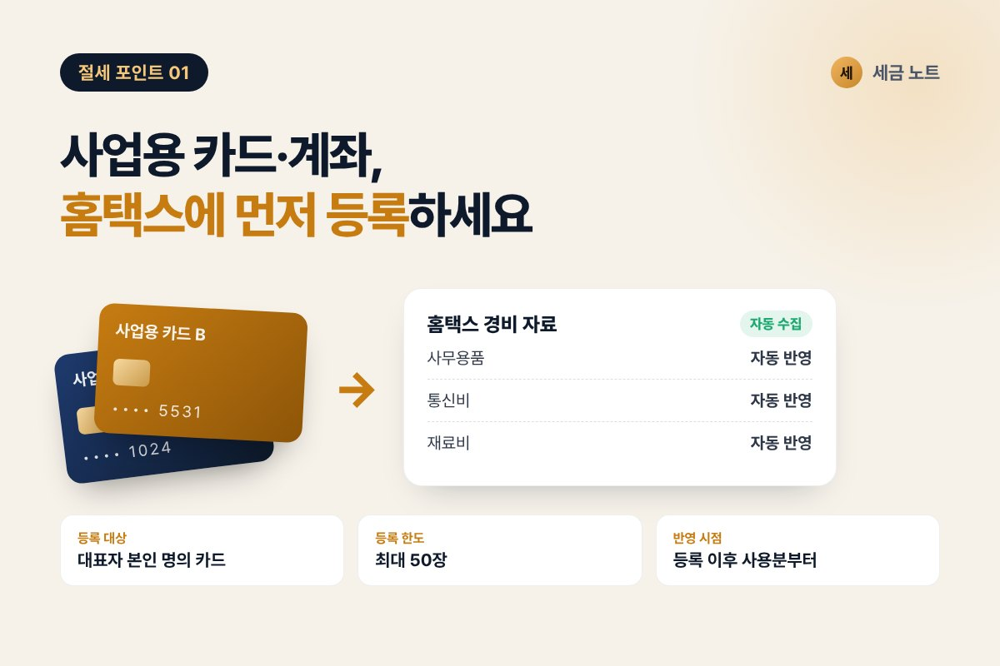
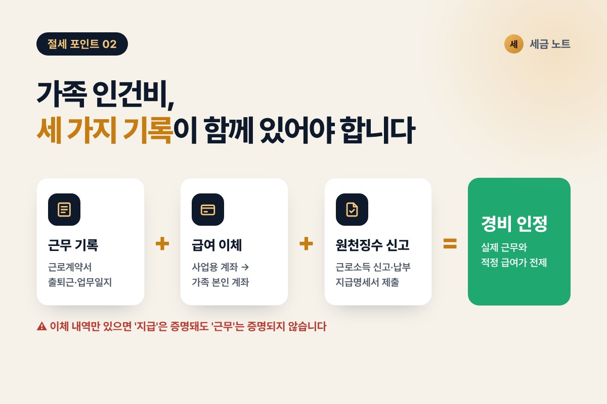
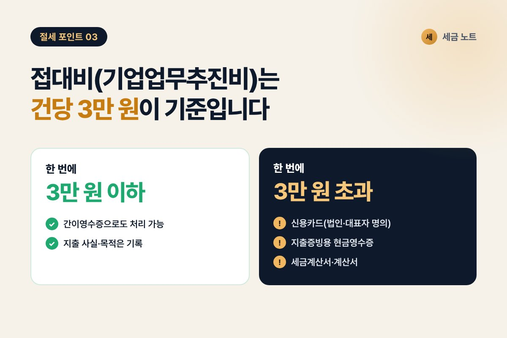
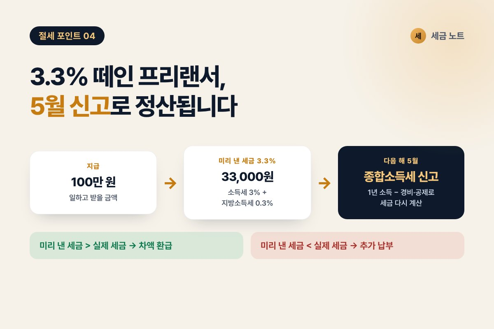
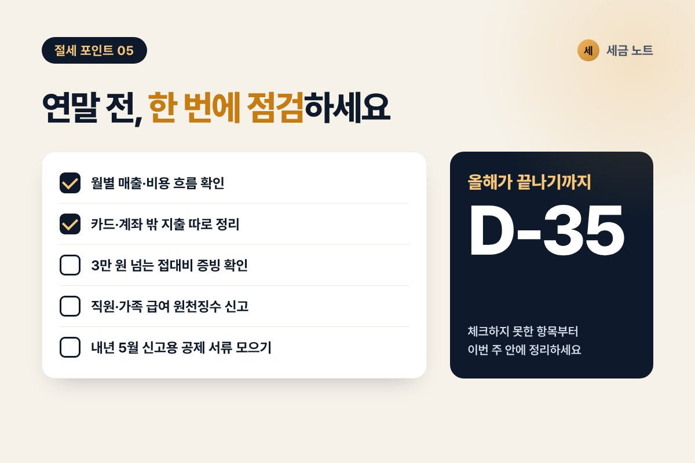

연말 전에 꼭 점검하세요 | 사장님·프리랜서가 놓치기 쉬운 절세 포인트 5가지
안녕하세요, 사장님과 프리랜서의 세금 고민을 쉽게 풀어드리는 세금 노트입니다.
11월 말이 되면 세무 상담 문의가 눈에 띄게 늘어납니다. 그런데 막상 이야기를 나눠보면 "그때 미리 해둘 걸" 하는 경우가 대부분입니다. 세금은 12월이 되면 갑자기 줄어들지 않습니다. 올해가 끝나기 전에 챙겨야 할 것, 그리고 내년 5월 신고 때 손해 보지 않도록 지금부터 준비할 것을 다섯 가지로 정리했습니다.
특히 이런 분들께 도움이 됩니다.
- 개인사업자로 매장이나 사무실을 운영하는 사장님
- 가족과 함께 일하는 1인·소규모 사업장
- 3.3%를 떼고 대금을 받는 프리랜서

1. 사업용 카드·계좌, 홈택스에 먼저 등록하세요
개인사업자라면 대표자 본인 명의의 신용카드와 체크카드를 홈택스에 '사업용 신용카드'로 등록할 수 있습니다. 최대 50장까지 등록할 수 있고, 등록해두면 사용 내역이 홈택스에 자동으로 모여 부가가치세와 종합소득세 신고 때 경비 자료로 바로 불러올 수 있습니다. 사업용 카드 내역 중 부가가치세 매입세액 공제 대상은 신고 화면에서 자동으로 구분되어, 영수증을 하나하나 입력하는 수고도 줄어듭니다.
주의할 점은 등록한 이후 사용분부터 자동으로 반영된다는 것입니다. 등록 전에 쓴 내역은 따로 챙겨야 하니, 아직 등록하지 않았다면 오늘 바로 해두는 것이 좋습니다. 가족카드는 등록할 수 없으니 사업 지출은 대표자 명의 카드로 결제하는 습관을 들여주세요.
- 홈택스 로그인 후 '사업용 신용카드 등록' 메뉴에서 신청
- 생활비와 섞이지 않도록 사업 전용 카드를 한두 장 정해두기
- 사업용 계좌도 함께 신고해두면 매출·경비 흐름이 한눈에 보입니다

2. 가족 인건비, '이체 내역'만으로는 부족합니다
배우자나 자녀가 실제로 사업을 돕고 있다면 그 급여는 경비로 인정받을 수 있습니다. 다만 국세청은 가족 사이의 거래를 꼼꼼하게 봅니다. 매달 가족 통장으로 돈을 보냈다는 기록은 '지급했다'는 증거일 뿐, '일했다'는 증거가 되지는 않습니다.
인정받으려면 아래 세 가지가 함께 있어야 합니다.
- 근무 기록: 근로계약서, 출퇴근 기록, 업무일지나 업무 메신저 기록
- 급여 기록: 사업용 계좌에서 가족 본인 명의 계좌로 매월 이체
- 신고 기록: 근로소득 원천징수 신고·납부와 지급명세서 제출
급여 수준도 중요합니다. 같은 일을 하는 다른 직원보다 지나치게 높으면 일부가 비용으로 인정되지 않을 수 있으니, 업무 내용에 맞는 금액으로 정해두세요.
재택이나 비정기 근무라도 실제로 일을 했다면 비용으로 인정받을 수 있지만, 그만큼 업무 결과물과 기록을 남겨두는 것이 더 중요합니다. 반대로 서류상으로만 직원으로 올려둔 '가공 인건비'가 적발되면 비용이 부인되고 가산세까지 붙을 수 있습니다.

3. 접대비는 '건당 3만 원'이 기준입니다
거래처 식사나 선물처럼 업무를 위해 쓴 비용은 기업업무추진비(예전 이름 접대비)로 처리합니다. 핵심은 한 번에 3만 원을 넘으면 반드시 적격증빙을 받아야 한다는 점입니다.
- 3만 원 이하: 간이영수증으로도 비용 처리 가능
- 3만 원 초과: 신용카드(법인은 법인카드, 개인사업자는 대표자 명의 카드), 지출증빙용 현금영수증, 세금계산서·계산서 중 하나 필요
3만 원을 넘는 접대비를 간이영수증으로만 받으면 그 금액은 비용으로 인정되지 않습니다. 법인이라면 직원 개인 카드로 결제한 접대비도 같은 문제가 생기니, 접대 자리의 결제 수단을 미리 정해두세요. 참고로 경조사비는 건당 20만 원까지 청첩장 같은 자료로 증빙할 수 있습니다.
접대비가 아닌 일반 경비도 3만 원을 넘으면 적격증빙을 받는 것이 원칙입니다. 일반 경비는 증빙이 없어도 비용으로는 인정되지만, 2%의 증빙불비가산세가 붙을 수 있습니다.

4. 3.3% 떼인 프리랜서, 5월 신고로 돌려받을 수 있습니다
프리랜서가 받는 돈에서 떼는 3.3%는 소득세 3%와 지방소득세 0.3%를 '미리' 낸 세금입니다. 확정된 세금이 아니라서, 다음 해 5월 종합소득세 신고 때 1년 소득에서 경비와 각종 공제를 반영해 다시 계산합니다.
예를 들어 100만 원짜리 일을 하고 3.3%가 떼였다면 33,000원을 미리 낸 셈입니다. 1년 동안 이렇게 쌓인 금액이 5월 신고 때 이미 낸 세금으로 반영됩니다. 소득이 크지 않고 경비가 많을수록 돌려받을 가능성이 커지고, 소득이 크거나 다른 소득과 합산되면 추가로 낼 세금이 생길 수 있습니다.
미리 낸 세금이 실제 세금보다 많으면 차액을 돌려받고, 적으면 추가로 냅니다. 중요한 건 신고를 해야 정산이 된다는 점입니다. 3.3%를 뗐다고 자동으로 환급되지는 않습니다. 지난 신고를 놓쳤다면 기한후신고나 경정청구로 최근 5년 안의 몫을 다시 확인해볼 수 있습니다.
- 지금 할 일: 업무용 지출 영수증과 카드 내역 모아두기
- 5월에 할 일: 원천징수 내역 확인 → 경비·공제 반영 → 신고

5. 매출·경비·노무, 연말 전에 한 번에 점검하세요
절세는 연말에 한 번에 정리되지 않습니다. 하지만 12월 전에 한 번만 점검해도 남은 선택지가 달라집니다. 아래 체크리스트로 올해를 돌아보세요.
- 올해 매출과 비용 흐름을 월별로 확인했다
- 사업용 카드·계좌 밖에서 쓴 지출을 따로 정리했다
- 3만 원이 넘는 접대비의 증빙을 확인했다
- 직원·가족 급여의 원천징수 신고를 빠짐없이 했다
- 내년 5월 신고에 필요한 공제 서류를 모으고 있다
체크하지 못한 항목이 있다면 그 부분부터 정리하시면 됩니다.
연말은 올해 지출 계획을 조정할 수 있는 마지막 시기이기도 합니다. 업무용 장비처럼 사업과 직접 관련된 지출을 앞두고 있다면, 증빙을 갖춰 올해 안에 처리하는 것이 나은지 미리 따져보세요.
마치며
세금은 아는 만큼 줄고, 미리 할수록 쉬워집니다. 오늘 정리한 다섯 가지 가운데 하나라도 놓치고 계셨다면 이번 주 안에 먼저 챙겨보세요. 혼자 판단하기 어려운 부분은 가까운 세무 전문가와 함께 점검하시면 훨씬 빠릅니다.
올해 증빙, 아직 책상 위에 쌓여 있나요?
※ 이 글은 일반적인 세무 정보를 정리한 것으로, 업종·소득 규모·사업자 형태에 따라 적용이 달라질 수 있습니다. 실제 신고 전에는 세무 전문가와 상담하시기 바랍니다.